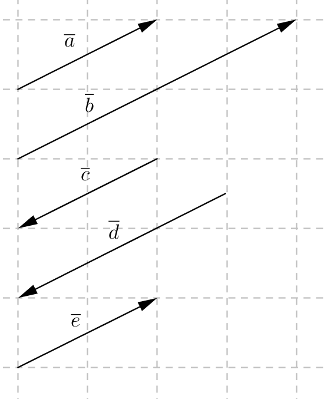

<article>
    <section>
        <header>Osa 1
        </header>

        <p>Tee tehtävät numerojärjestyksessä. Pidä huolta, että ymmärrät, miksi teet mitä teet.</p>

        <p>Kun tarkistat tehtäviä, käytä seuraavia koodauksia: jos tehtävä meni ensimmäisellä kerralla oikein, ympyröi tehtävänumero vihreällä tmv. tavalla, jonka erotat. Jos tehtävä ei mennyt ensimmäisellä oikein, jätä yritys näkyviin, älä kumita sitä pois. Etsi, missä virhe tapahtui ja alleviivaa se. Selitä viereen omaan tyyliisi, mikä tai miksi tehtävä ei mennyt niin kuin piti. Tee tehtävä uudelleen ja ympyröi tehtävänumero keltaisella värillä tmv. Jos tehtävä jää kokonaan tekemättä avusta huolimatta, merkitse se itsellesi ylös punaisella.
        </p>
        <p>Ahkeraa työskentelyä!</p>

        <ol>
            <li>
                Vektori on matemaattinen malli, jolla on sekä suuruus (pituus) että suunta. Vektori nimetään usein joko päätepisteiden avulla, esim. $\overline{AB}$ tai pienellä kirjaimella, esim. $\overline{a}$. Ohessa on erilaisia vektoreita. Vertaa jokaista vektoria vektoriin $\overline{a}$. \\
                <ol>
                    <li>Palauta mieleen, mitä tarkoitti käsite yhdensuuntaisuus (MAA3 ja MAA4). Mitkä vektoreista ovat yhdensuuntaisia vektorin $\overline{a}$ kanssa?</li>
                    <li>Samansuuntaiset vektorit kulkevat samaan suuntaan, se on siis tiukempi vaatimus kuin yhdensuuntaisuus. Mitkä vektoreista ovat samansuuntaisia vektorin $\overline{a}$ kanssa?</li>
                    <li>Mitkä vektoreista ovat vastakkaissuuntaisia vektorin $\overline{a}$ kanssa?</li>
                    <li>Mitkä vektoreista ovat erisuuntaisia vektorin $\overline{a}$ kanssa?</li>
                    <li>Vektorit ovat samat silloin, kun niillä on samat ominaisuudet. Toisin sanoen niiden tulee olla yhtä pitkät ja samansuuntaiset. Mitkä vektoreista ovat samoja kuin vektori $\overline{a}$?</li>
                    <li>Mitä voisi tarkoittaa vastavektori? Mitkä vektoreista ovat vektorin $\overline{a}$ vastavektoreita?</li>
                    <li>Tarkista päättelysi oikeellisuus lukemalla kirjasta s. 9. Merkitse jokaiseen kohtaan a)-f) vektoreiden suuntaa kuvaava tieto merkintöjen avulla, jotka esitellään samalla sivulla.</li>
                </ol>
                
            </li>
            <li>
                Nollavektori on sellainen, joka alkaa ja päättyy samaan pisteeseen. Sillä ei ole suuntaa ja sen pituus on nolla. Nollavektoria merkitään $\overline{0}$. Jos joskus tehtävässä päädytään tilanteeseen $\overline{AA}$, niin tällöin tiedetään, että kyseessä on nollavektori $\overline{0}$. Vektorin $\overline{b}$ yksikkövektori on samansuuntainen vektori kuin $\overline{b}$, mutta sen pituus on yksi. Yksikkövektoria merkitään $\overline{b}^0$. Piirrä vektorin $\overline{b}$ yksikkövektori.

                 
            </li>
            <li>
                Harjoittele lisää tekemällä tehtävät 1,2, 3 ja 5.
            </li>
            <li>
                Vektoreiden välinen kulma muodostuu, kun vektorit asetetaan alkamaan samasta pisteestä. Vektoreiden välinen kulma on kuvaan muodostuvista kulmista pienempi, eli $0^{\circ}\leq \angle{(\overline{a},\overline{b})}\leq 180^{\circ}$. Harjoittele tekemällä tehtävät 8 ja 17 kirjasta.</li>

            Seuraavaksi  on vuorossa vektoreiden peruslaskutoimitukset, eli yhteen ja vähennyslasku sekä vektorin kertominen luvulla. Näitä taitoja harjoiteltiin jo laivanupotuksessa.

            <li>
                Summa- ja erotusvektorit saadaan seuraavasti. Muodosta ensin tarvittavat vektorit: tulkitse vähennyslasku summaksi, jossa lisättävänä on vähennettävän vastavektori. Tämän jälkeen muodosta reitti niin, että seuraava vektori alkaa aina siitä, mihin edellinen päättyy. Summa- ja erotusvektori saadaan yhdistämällä reitin alku- ja päätepiste. Harjoittele laskutoimitusten tekemistä piirtämällä tekemällä tehtävät  19 ja 20.\\
            </li>
            <li>
                Harjoittele lisää tekemällä tehtävät 23 ja 34.</li>

            <li>
                Vektoreita voi laskea yhteen ja vähentää sekä kertoa luvulla, kuten polynomeja, toisin sanoen samoja vektoreita voi yhdistää ja luvun voi kertoa vektoreiden summan tai erotuksen sisään. Esimerkiksi $\overline{a}-(2\overline{a}-\overline{b})=\overline{a}-2\overline{a}+\overline{b}=-\overline{a}+\overline{b}$. Piirrä jotkin erisuuntaiset vektorit $\overline{a}$ ja $\overline{b}$. Piirrä ensin kuva alkutilanteesta, eli yhtäsuuruusmerkin vasenta puolta esittävä tilanne. Piirrä viereen kuva lopputilanteesta, eli yhtäsuuruusmerkin oikeaa puolta esittävä tilanne. Jos homma meni niin kuin piti, niin lopullisten vektoreiden pitäisi näyttää samalta. </li>

            <li>
                Harjoittele tekemällä tehtävät 21 ja 35.</li>

            <li>
                Lue kirjasta esimerkki s. 20 ja tee tehtävät 27 ja 29.</li>

        </ol>
    </section>
</article>
